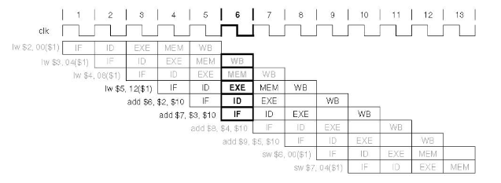
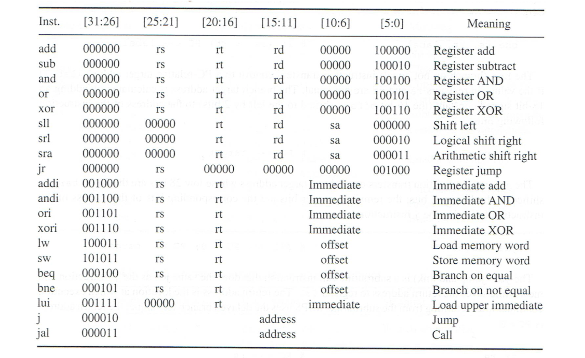
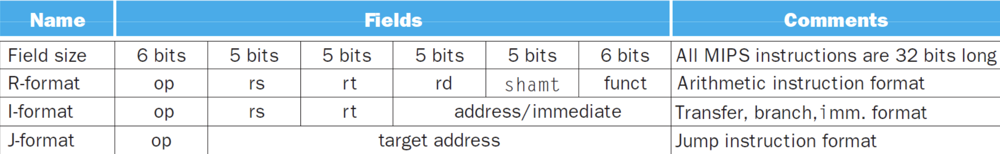
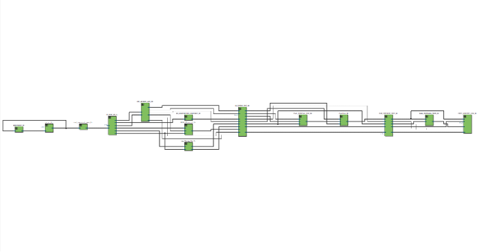

The MIPS (Microprocessor without Interlocked Pipeline Stages) architecture is a reduced instruction set computer (RISC) architecture that has played a significant role in the development of microprocessors.
MIPS architecture features a clean and streamlined instruction set, emphasizing simplicity and efficiency. It focuses on optimizing the performance of frequently used instructions, making it suitable for a wide range of applications, including embedded systems, consumer electronics, networking equipment, and high-performance computing.
One of the distinguishing characteristics of MIPS is its fixed instruction format, where instructions are encoded in a 32-bit word. This fixed-format allows for efficient decoding and pipelining, enabling high-performance execution and reducing the complexity of the microarchitecture.
MIPS processors employ a five-stage pipeline, including instruction fetch, instruction decode, execution, memory access, and write-back. This pipelining technique enables instructions to be processed concurrently, maximizing the overall throughput of the processor.

Design
The picture above shows the structure and components of this CPU. This CPU is composed of 5 stages, which are: Instruction Fetch(IF), Instruction Decode(ID), Execution(EXE), Memory(MEM) and Write Back(WB) stage.
IF Stage
The Instruction Fetch stage consists of three components. Firstly, there is the program counter register, which holds the physical address of the next instruction in the instruction memory (represented here as a simplified memory structure). In each cycle, an adder increments the address by 4, and the resulting address is stored in the program counter for the next clock cycle. Simultaneously, the instruction memory, equipped with an input port and an output port, fetches an instruction using the address from the program counter. This fetched instruction is then stored in the IF/ID register during the same cycle.
ID Stage
In the instruction decoding stage, we can clearly see the connection between the instruction set and the actual electronic circuit. First, the instruction will be decoded into following components:
op code: basic operation of the instruction
rs: the first register source operand
rt: the second register source operand
rd: the register destination operand
shamt: shift amount to be used in shift instructions
funct code: function code
imm: immediate value

Combining the Op code (bits 31-26) and funct code (bits 5-0) in MIPS instructions enables the hardware to determine the current instruction and its corresponding function. For example, instructions for basic arithmetic operation(R-format) have the same op code 0x0 but

with a different funct code. So, Op code and funct code combined will be provided to the control unit for generating control signals for later stages. These control signals will be covered later.
There is also a MUX in the MIPS architecture that utilizes the control signal “regrt” to select either the “rd” or “rt” register. The selected signal, along with the data to be written back to the register file, is then passed back to the ID stage. This MUX serves the purpose of determining the appropriate destination for the write-back operation. For instance, instructions with an opcode of 0 will select the “rd” register as the destination. On the other hand, for the LW (Load Word) instruction, the data retrieved from the data memory during the MEM stage will be written back to the register specified by the “rt” register. Therefore, the MUX helps decide which part of the instruction contains the desired destination for the write-back operation.
The signals “rs” and “rt” are used to access the register file and read the data stored in registers “rs” and “rt” simultaneously through the “qa” and “qb” ports. Additionally, the immediate value (imm) is sign extended and passed to the ALU for computation. This computation takes place during the EXE stage, where the ALU performs operations using the immediate value and other relevant data.
Then, let’s look at the control signals generated by the control unit:
wreg: A write back to register will happen in the lifecycle of the current instruction
m2reg: A write back to register with data in memory will happen in the lifecycle of the current instruction
wmem: A write to memory will happen in the lifecycle of the current instruction
aluc: ALU operation mode ex. if aluc==b0010, then ALU_out <= ALU_a + ALU_b;
aluimm: A immediate value is needed by the ALU to finish this operation
EXE Stage
In the EXE (Execute) stage, two signals are employed to control the ALU’s input sources and operation mode. Firstly, the “ealuc” signal is utilized to select the desired operation mode for the ALU. For instance, a value of “b0010” would indicate that the ALU should perform an addition operation on its two input numbers.
Secondly, the “ealuimm” signal determines the source of the input port “b” of the ALU. This is necessary because the number on port “b” can either come from the register file or be an extended immediate value. The “ealuimm” signal helps in determining whether the value on port “b” should be fetched from the register file or be the extended immediate value.
MEM Stage
During the MEM (Memory) stage, the “mwmem” signal is employed to determine whether the current instruction requires writing to the data memory or not. If the “mwmem” signal is set to indicate a write operation, the value from input port “a” will be written to the memory address specified by the value on input port “di”. On the other hand, if the “mwmem” signal indicates a read operation, the word at the memory address specified by the value on input port “di” will be retrieved and passed to the output port of the data memory. The “mwmem” signal thus controls the write or read operation on the data memory based on the instruction’s requirements.
WB Stage
In the final stage of the MIPS pipeline, the “wm2reg” (also referred to as “em2reg”) signal is employed as a selector for a MUX. This MUX determines whether the result obtained from the ALU computation or the data recently read from the data memory during the MEM stage will be chosen for writing back to the register file. The “wm2reg” signal serves as the control signal for this MUX, enabling the selection of the appropriate data to be written back based on the pipeline stage’s requirements.
Testing
RTL design:

Output waveform of executing following instructions: